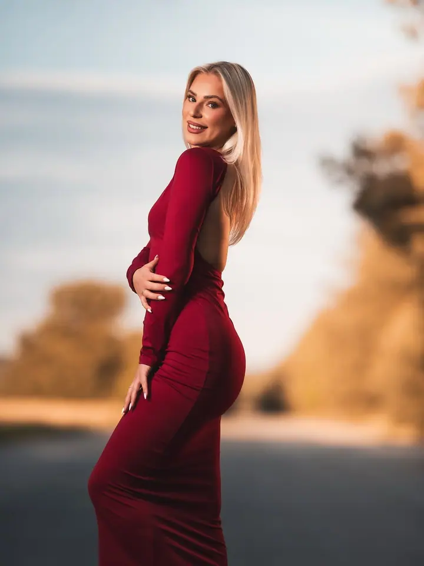
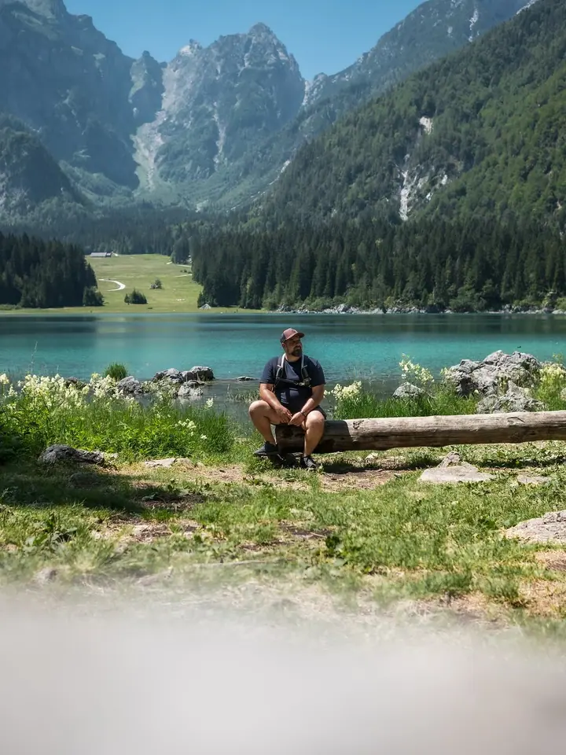
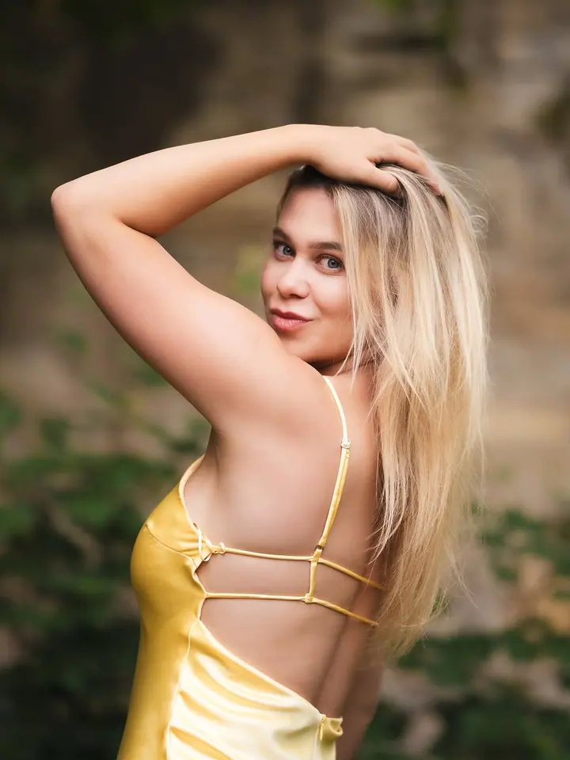
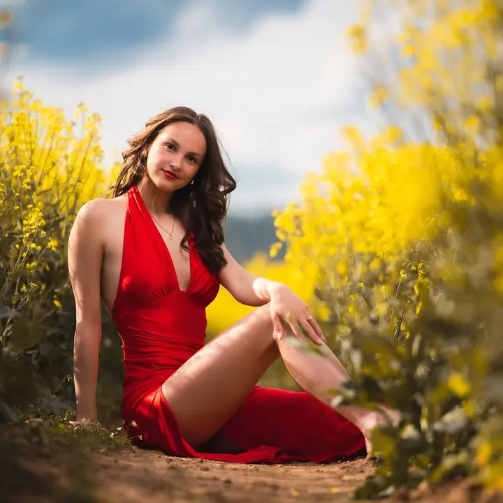
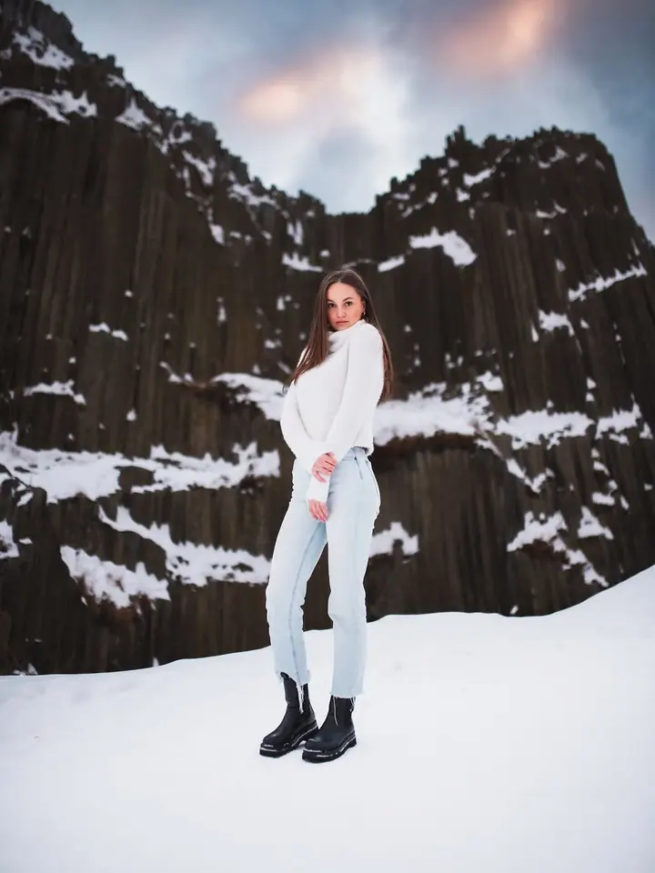
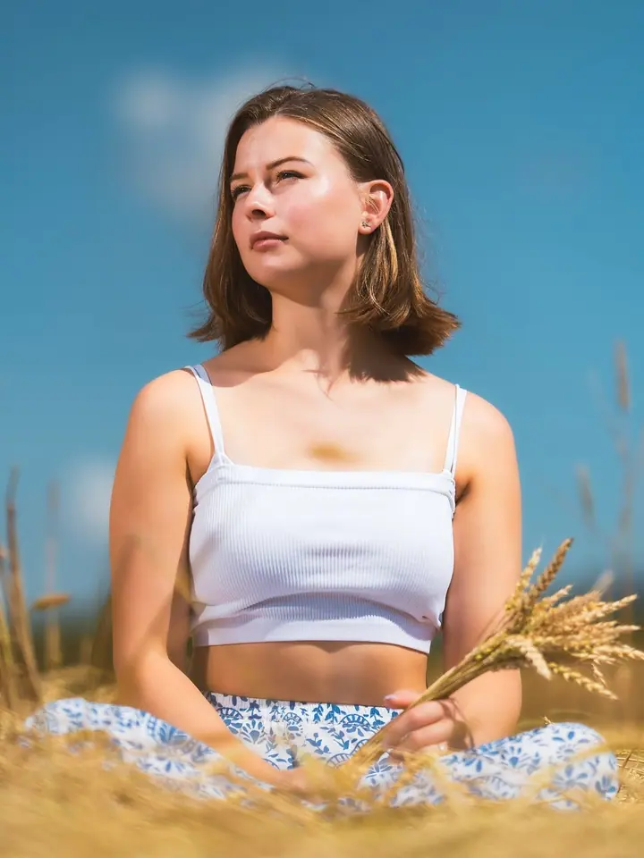
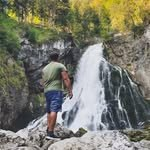

01 / 04
Portréty
Portrétní focení lidí i domácích mazlíčků. Dostanete 5 a více upravených fotografií, cena je 1 000 Kč.
Zeptat se na termín→





Portréty v přírodě severních Čech
Zeptat se na termín →(01) Ahoj
Jmenuji se Karel Vojíř a fotím portréty, rodiny a svatby v Liberci, České Lípě a okolí. Často vyrážím ven, do lesa, na louku nebo mezi skály, a hledám místo, kde se budete cítit dobře.
290příspěvků s fotkami a příběhy
(02) Co fotím
01 / 04
Portrétní focení lidí i domácích mazlíčků. Dostanete 5 a více upravených fotografií, cena je 1 000 Kč.
Zeptat se na termín→02 / 04
Fotím celý svatební den: přípravy, obřad, skupinky, portréty novomanželů, krájení dortu, první tanec i zábavu. Za 10 hodin focení dostanete 400 a více upravených fotografií a webové album, cena je 12 000 Kč.
Zeptat se na termín→03 / 04
Fotoreportáž z akce v rozsahu 5 hodin. Dostanete 200 a více upravených fotografií, cena je 5 000 Kč.
Zeptat se na termín→Dále nabízím
Focení celé rodiny, ze kterého dostanete 10 a více upravených fotografií. Cena je 1 300 Kč.
↗(04) Postup
Od první zprávy po hotovou galerii.
Krok 1 z 4
Ozvěte se přes formulář, e-mailem nebo zprávou na Instagramu. Napište, o jaké focení máte zájem a kdy by se vám hodilo.
Krok 2 z 4
Společně vybereme termín a místo. Poradím vám, kde bude dobré světlo a co si vzít na sebe.
Krok 3 z 4
Fotíme v klidu a bez spěchu. Navedu vás, abyste se před objektivem nemuseli cítit nejistě.
Krok 4 z 4
Fotky pečlivě vyberu a upravím. U svatby navíc dostanete webové album.
Les, louka nebo skály. Fotky, které dýchají.
(05) Za objektivem
Jsem portrétní, rodinný a svatební fotograf ze severních Čech. Fotím hlavně v Liberci, České Lípě a okolí. Rád za vámi přijedu tam, kde to máte rádi.
Na portrétech mi záleží na světle, barvách a prostředí. Fotím lidi, ale i domácí mazlíčky. Pejsci k focení patří stejně jako celá rodina.
Svatby fotím celý den, od příprav až po zábavu. Na webu najdete svatební příběhy, které jsem fotil od roku 2021, a v ceníku přehledně všechno, co dostanete.

Karel
Karel Vojíř · Portrétní, rodinný a svatební fotograf
Portrét stojí 1 000 Kč a dostanete 5 a více upravených fotografií. Rodinné focení je za 1 300 Kč s 10 a více upravenými fotkami.
Za 12 000 Kč zachytím celý den v rozsahu 10 hodin: přípravy, obřad, skupinky, portréty novomanželů, krájení dortu, první tanec i zábavu. Dostanete 400 a více upravených fotografií a webové album.
Určitě. Fotím i domácí mazlíčky, takže pejsek může být na portrétu nebo rodinných fotkách s vámi.
Hlavně v Liberci, České Lípě a po celých severních Čechách. Místo focení vybereme společně.
(07) Kontakt
Napište pár vět o tom, co si představujete, a termín, který se vám hodí.
karel.vojir@gmail.com